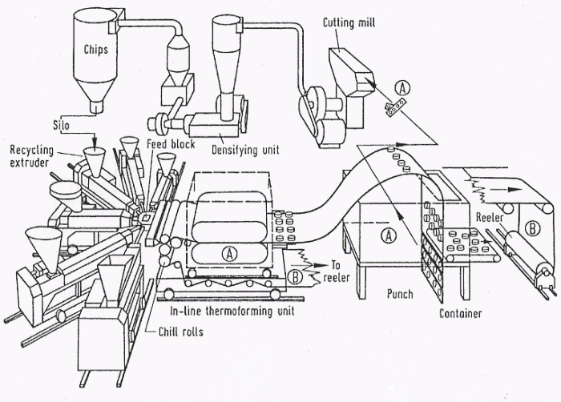
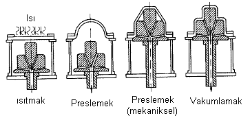
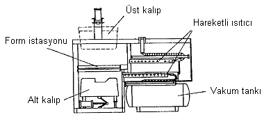
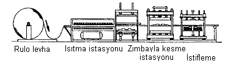
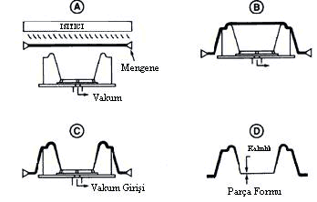

|
3.
TERMOPLASTÝK LEVHA EKSTRÜZYONU (CALENDERING)
Plastik
sanayiinde pekiþtiricisiz film ve levhalarýn üretimi için
uygulanan bir yöntemdir. Günlük yaþamda görülen duvar kaðýtlarý
gösteri ekranlarý, bagaj ve kredi kartlarý, çeþitli ambalaj
malzemeleri, reklam panolarý kalýpsýz ekstrüzyonun tipik örnekleridir
(5).
Kalýpsýz
ekstrüzyon süreci karýþtýrýcýlý bir eritme cihazýndan alýnan
termoplast hamurunun gittikçe sýklaþan merdane çiftleri arasýndan
geçirilmesi ve sabit gergili bir sarma mekanizmasý ile elde
edilen ince levha filmin sarýlmasýndan ibarettir (5).

Þekil
3. Levha Ekstrüzyon (6)
4.
SICAK BÝÇÝMLENDÝRME (THERMOFORMING)
Sýcak
þekillendirmenin tanýmý, plastiklerin sýcaklýðýn, basýncýn
veya vakumun tekrar þekillendirme altýnda olduðu etkiyi ifade
eder. Bu yöntem için bir çok teknik bulunmaktadýr. Havanýn
ve/veya vakumun kullanýmý için sýkýþtýrýlanýn termoplastik
levhanýn þekillendirildiði metot tercih edilir (1).
Basýnçta
ýsý ile biçimlendirmede sürekli ve kesilmiþ levha kullanýmý
olmak üzere iki yol vardýr. Birincisi daha çok ambalajlamada
uygulanýr. Bazen bir levha besleme bobininden, bazen de levha
ekstrüzyon cihazýndan alýnan ve sisteme baðlantýlý olan malzeme
ýsýtýlarak (infrared, kuvars lambasý veya direnç telli biçimlendirilir.)
bu arada tesise ait hidrolik, hava akýþ diizeni, vakum pompalarý
biçimlendirme tesisinin önemli kýsýmlarý olduðu belirtilebilir
(5).
4.1.
Yöntem Aþamalarý
Yöntem
meydana gelirken 3 aþamadan geçer; ýsýnma, þekil verme, soðutma.
Birinci aþamada, yarý iþlenmiþ mamul ýsýtýlýr. Bu gerçekleþtirilmede,
çok yönlü bir temas veya taþýným kýzýlötesi ýþýnla temas kurulur.
En çok kýzýlötesi ýþýn yöntemi kullanýlýr çünkü amaç enerjiyi
direk içine iþlemek plastiði bölgesel iþlemektir. Plastik
böylece çok çabuk ve düzenli bir þekilde, yüzeye zarar vermeden
üzerinden ýsýtýr (3).
Ýkinci
aþamada ise þekil vermedir. Plastik çekip uzatýlýr bu aþamada.
Yari ilenmiþ mamul ýsýtýlarak mengeneye sýkýþtýrýlýp altýnda
veya üstündeki kalýba orta hava basýncýyla vakumlanýr. Bu
yöntemin dezavantajý, sadece bir kýsmýn kalýbýn tam þeklini
alabilmesidir, yani tek yüzlü kalýp olmasýdýr. Bundan çýkan
sonuç, ayýrt edici olan arada yapýlmýþ kesin ve kesin olmayan
yöntemler, uygun olup olmadýðý içine veya dýþýna verilen formla
doðrudur (3).
Üçüncü
aþama olan soðutma, ýsýtýlmýþ yarý iþlenmiþ mamulün soðutucu
kalýba temas etmesidir. Kýsa zamanda soðutma bize kalýbýn
mekanizmalarýnýn ekstra soðumasýna imkan tanýr. (Örneðin,
seri üretimdeki tasarýmlar için). Soðutmayý hýzlandýrmak için
ilaveten kalýbýn soðuyan taraflarý ile uzakta kýsýmlarýna
bakarýz. Bu soðutma bir hava üfleciyle gerçekleþtirilebilir.
Þekil 4.1.2. Sýcak þekillendirme iþlemini göstermektedir (3).

Þekil 4.1. Sýcak þekillendirme iþlemi (3)
4.2.
Teknik Ekipmanlar
Yöntem
aþamalarý ve teknikler yerine getirildiðinde tek-istasyon
veya çok istasyonlu makinelerle olur. Tek-istasyonlu makinede,
yarý iþlenmiþ mamulün tüm yüzeyleri ýsýtýlýp sürdürülerek
kalýp alaný kadar bir mesafede teknik aygýtlarýn hareketi
ile yapýlan iþlemdir. (Bknz þekil 4.2.1.) (3).

Þekil 4.2.1. Tek Ýstasyonlu Makine (3)
Çok
istasyonlu Makinede, yarý iþlenmiþ mamul hareketi devamlý
olarak bir istasyondan diðerine geçer. (Þekil 4.2.2.) (3).
Tek
istasyonlu makineye göre dezavantajý uzun dönme zamaný ile
toplam eþdeðer zamanda için uzun aþamalar gerekir. Dönme zamaný
olarak çok istasyonlu makinede eþit zamanda verim için uzun
çalýþmalar gerekir (3).
Sýcak
þekillendirme yöntemini paketleme(yoðurt kaplarý), yüzme havuzlarý
veya motor gövde parçalarý gibi büyük parçalar üreten büyük
ölçekli iþletmeler kullanýr (3).

Þekil 4.2.2. Çok Ýstasyonlu Makine (3)
5.
VAKUMLA KALIPLAMA
Vakumla
kalýplama sýcak biçimlendirmenin en çok kullanýlan türüdür.
Vakumla kalýplama genellikle girintili ve çýkýntýlý olup da
diðer metotlarda kalýplanmayan parçalarýn üretilmesinde kullanýlýr.
Önce, kalýplanacak parça biçimine uygun olarak hazýrlanan
kalýp üzerine ýsýtýlan plastik levha gerdirilir. Gergin ve
kalýba yapýþýk haldeki plastik levha, kalýp içerisindeki hava
emilerek istenilen biçime gelmesi saðlanýr (Þekil5) (8).

Þekil 5. Vakum Kalýplama
|